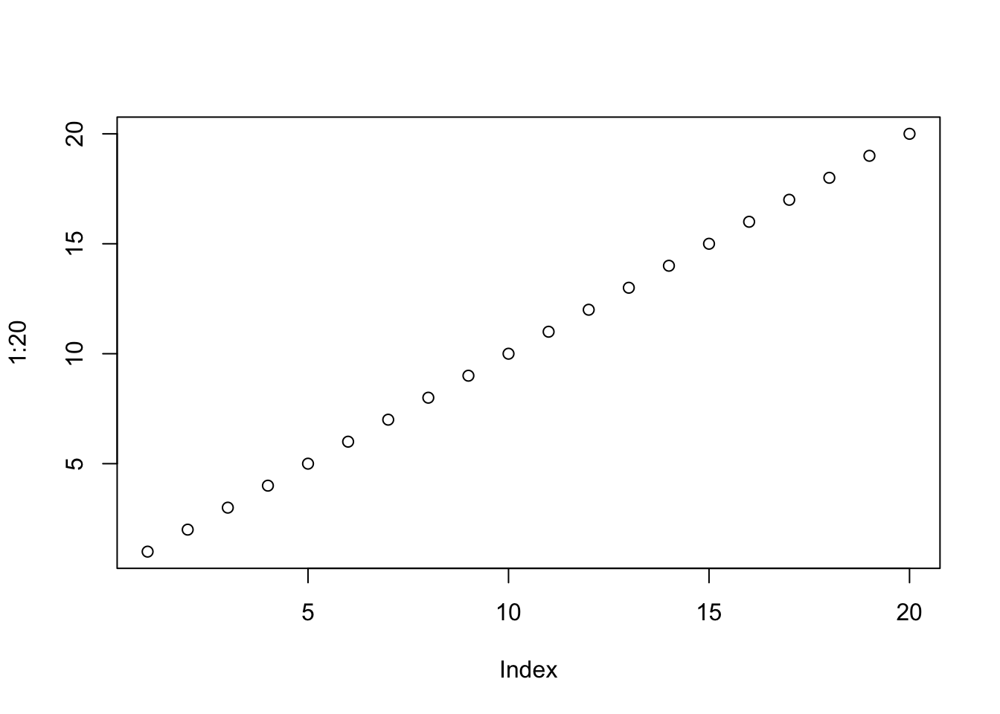
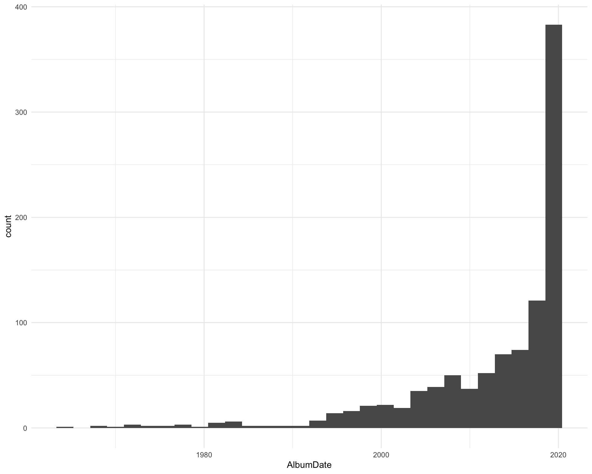
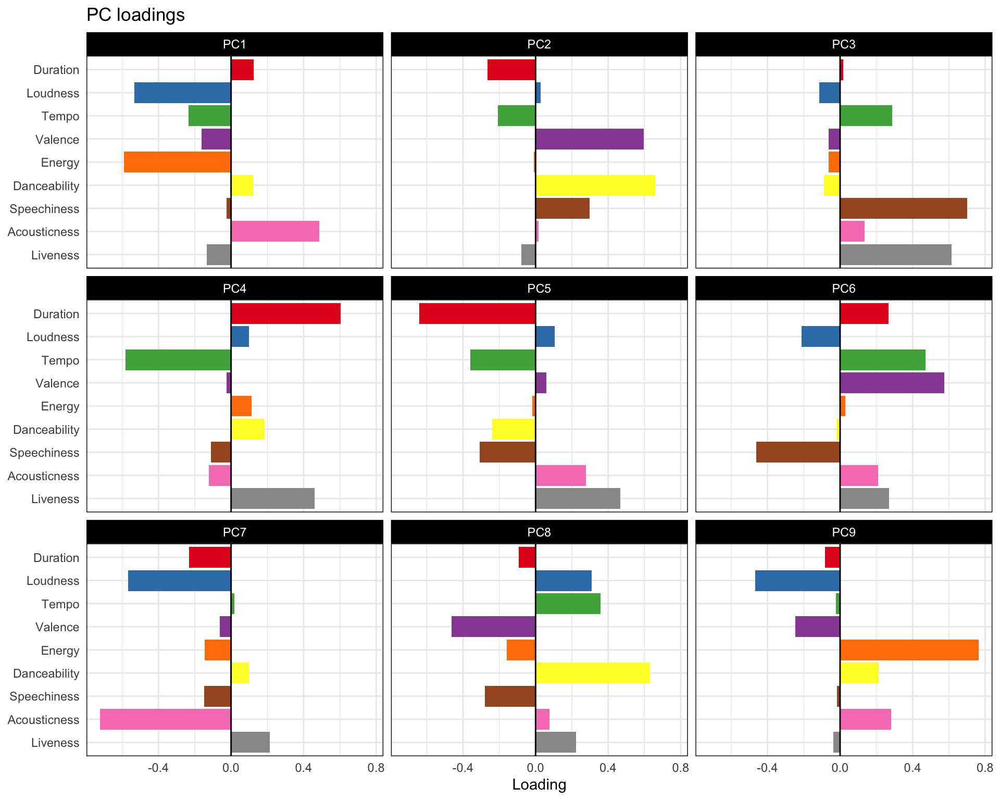
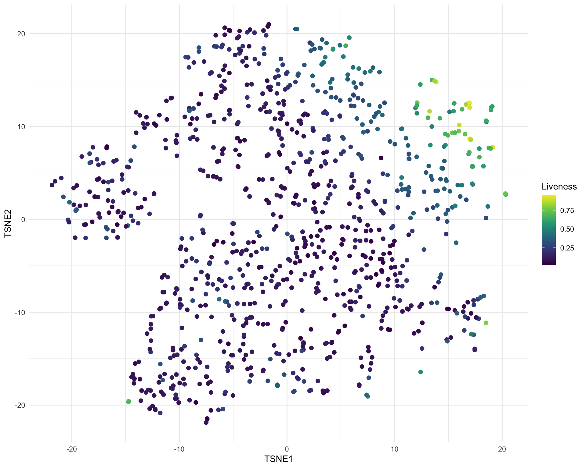
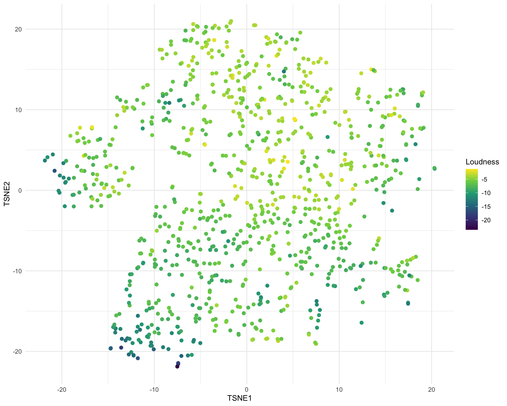
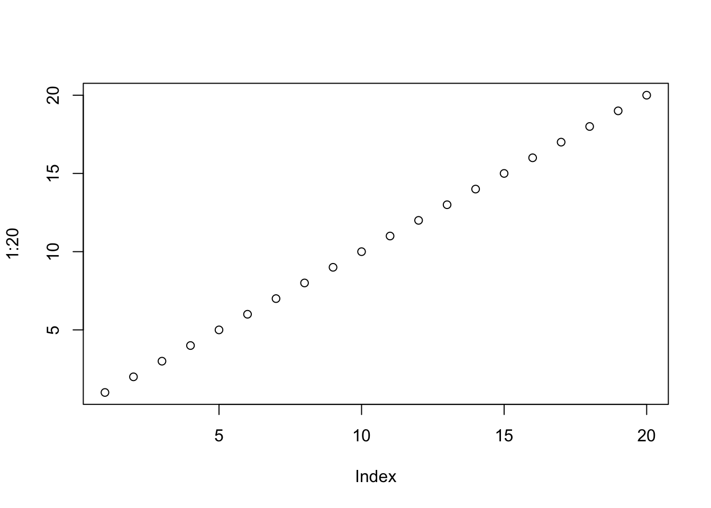

plot(1:20)
From 25 to 31 May triple j ran an event they called the “Requestival”. For anyone not from Australia, triple j is a national public radio station with a mandate to target a youth audience and promote alternative and Australian music. For many Australians, particularly those that grew up in regional areas, triple j is responsible for providing their first exposure to music outside the current top 50 or golden oldies. The idea behind the Requestival was fairly simple. To make up for the cancellation of many music festivals due to the coronavirus triple j would hold their own virtual festival with the twist being that every song they played would be requested by listeners. The second twist was that they would play any request, not just the kind of new alternative they usually play. And they did mean anything including Beethoven, TV show themes and Taylor Swift who all got some air time during the week.
I thought this would be a cool dataset to have a play around with. I’ll show some of the highlights here but have a look at the {workflowr} analysis website for more details or check out the code on GitHub.
triple j has a recently played page on their website that has a live stream of the songs they are playing. This page also has a search function that let’s you find which song was played at a particular time. I will note that there may be some errors in this list, there was at least one time I heard a song played but saw something else get added to the list. To get the raw data I simply searched for each day of the Requestival, clicked the “Show more” button until all the songs for that day were shown and then downloaded the HTML page. It’s probably possible to do this all programmatically but it was only a few pages so it didn’t seem worth the effort. Thankfully the HTML was fairly simple and neat so it was relatively easy to extract the information I wanted using {rvest}. What I ended up with was a tibble with times, song name, artist and release and links to Spotify, YouTube and the triple j Unearthed website. There were 27 songs that didn’t have release information on the website for some reason. See the scraping page of the analysis website for more details of this part.
There was a bit more tidying I wanted to before any analysis. This was things like converting the file names into days, converting the time strings to hms objects in the correct timezone and replacing Unicode characters. The Spotify and YouTube links included queries which it might be useful to have so I also extracted those into new columns and created a column to indicate if a song was from Unearthed. The final tidying step was to select songs played between 6 am and 9 pm as these were the official hours of the Requestival. See the details here.

After all this I ended up with a dataset with 1187 songs from 896 artists off 1049 releases.
There isn’t much analysis you can do on a simple list of songs so I wanted to augment the data in some way. I have seen some cool analysis using information from Spotify before so I thought that would be a good source to try. Despite the {spotifyr} package providing a nice interface to the Spotify API this wasn’t quite as easy as I had hoped. I initially wanted to use the queries I had extracted from the Spotify links but these weren’t in the format that {spotifyr} needs so I had to construct them manually. I also ran into the problem that the combination of song, artist and release was both too specific and not specific enough. For some songs I got no results when I searched for all this information while for other songs I got many results. These were often duplicates due to releases with slight differences in different countries etc. but sometimes they were unrelated songs that just happened to have enough key words in common.
In the end I searched first for song, artist and release and took the first result if there was one, if not I searched for just song and artist. The only other constraint I had was that the album release date had to have a precision of “day” (an exact date, not just a month/year). I found that was able rule out some bad matches. In the end I was able to find matches for 994 songs but these aren’t perfect. There are probably some incorrect matches and there are a few I have seen where the song was correct but the best version wasn’t selected, for example the match for The Mamas & The Papas “California Dreamin’” had an album date from 2020 even though the album “If You Can Believe Your Eyes And Ears” was first released in 1966. This is the reality of working with real world data I guess and the majority of matches should be close enough to still be useful. See the augmentation page if you are interested in all the details.
Once I had the track ideas for these songs it was relatively simple to extract more information about them from Spotify including the album release date, song duration, whether it is marked as explicit and a Spotify “popularity” score. Spotify also has more musical information about each track. There are some basic things like whether the track is in a major key, the loudness and tempo but also complex scores between zero and one for “valence”, “energy”, “danceability”, “speechiness”, “acousticness” and “liveness”. See the Spotify page for more details but basically these try to capture the general feel of each song.
The first kind of analysis I wanted to do was some basic exploration of the final dataset. What I did was plot a histogram or barplot of each column and pick out the top and bottom five scoring songs. You can see all the details on the exploration page but I’ll just list a few highlights here.

Now that I had a look at each variable individually I wanted to see what the dataset looked like as a whole. The first thing you always do with a new dataset is a PCA so for the songs with Spotify data I took the duration, loudness, tempo, valence, energy, danceability, speechiness, acousticness and liveness. The scatter plots don’t look great but the loadings are interesting.

For example you can see that PC1 separates loudness and enery from acousticness and PC6 separates speeciness from valence and tempo.
I then did a t-SNE using these principal components. I had hoped that this information might be enough to see some clear separation between genres or styles but this isn’t really the case. There are few variable which are restricted to one part of the space, for example liveness:

But most of the other variables just show a general trend like loudness.

See the embedding page if you would like to see what all the other variables look like.
This is really only an exploratory analysis and there are lots more things you could do: clustering to group songs, looking at correlations, text analysis etc. I had hoped to find some of the really unusal things that were played (like the Pokemon theme song) but I don’t think they are musically different enough for these characteristics to pull them out. In the end I would call this project a partial success, I didn’t find anything super interesting but I need learn some things and it was fun to play around with. The dataset is available on GitHub and I would be interested to see if you can pull anything else out of it. Maybe I will return to it and do something more detailed in the future.
plot(1:20)